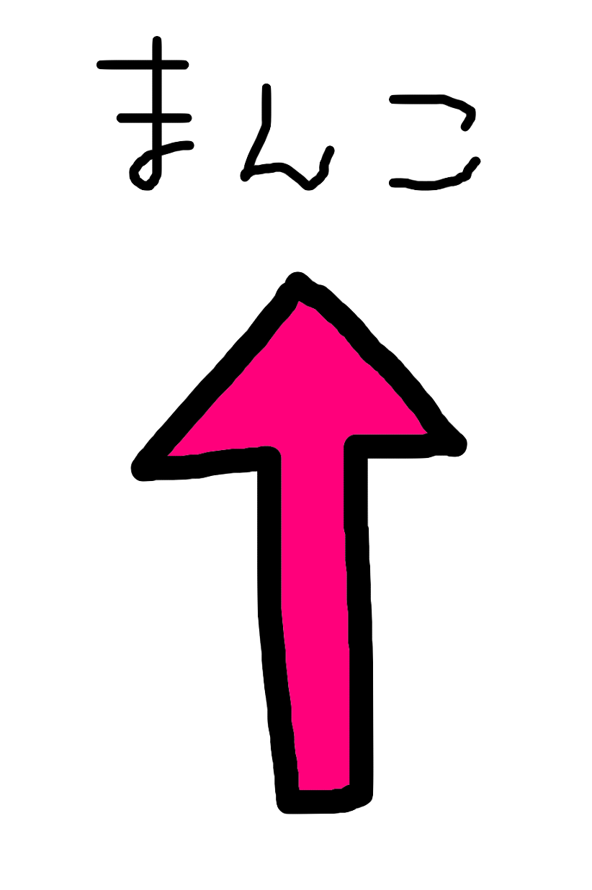

Where is Manko?
This site show you which direction Manko is located.
What's this site
Get Location
【your direction】
【Latitude】
【Longitude】
【distance(km)】
【Azimuth】

The information shown on this site is rough.
For more detailed information,please refer to
official websites and public institutions.